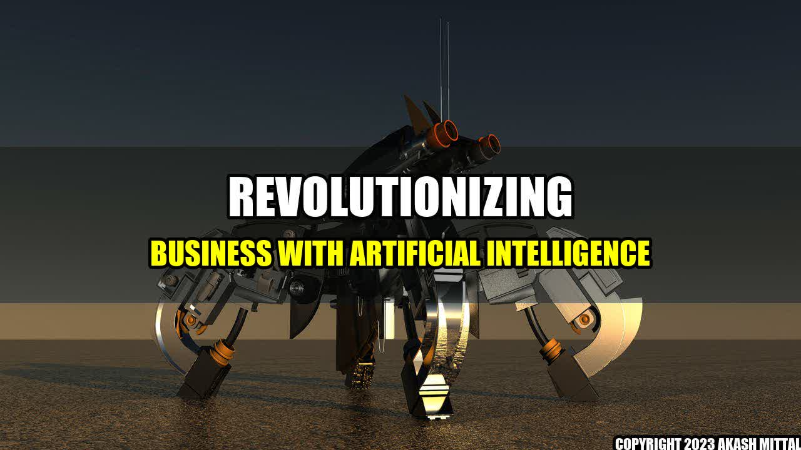

Revolutionizing Business with Artificial Intelligence
On a bright, sunny day in June, John, the CEO of a leading automobile company, was on his way to work. As he entered his office, he was greeted by a flurry of activity. His employees were running around, shouting and waving their hands in excitement. John couldn't fathom the reason for the commotion, until he heard one of them exclaim, "We did it! Our AI-powered chatbot just closed a deal with a major client!"
That day marked a turning point in John's company, and in the world of business.
Artificial Intelligence, or AI, has been slowly but surely making its way into various industries over the past few years. Now, it has become an integral part of the business landscape, changing the way companies operate and interact with their customers. From chatbots that can resolve customer queries and issue refunds, to predictive analytics that can identify market trends and forecast sales, AI has the potential to transform businesses across multiple domains.
One of the main companies that is leading the charge in AI-powered chatbots is TARS. Their chatbots have helped companies like Uber and TechCrunch improve customer engagement and conversion rates. Another company that is leveraging AI for business processes is WorkFusion, whose intelligent automation platform helps organizations streamline their operations and reduce costs.
But it's not just large corporations that are benefiting from AI. Smaller companies like Mynd, a real estate management firm, are also seeing positive results. By using AI to automate administrative tasks, Mynd has reduced the time it takes to onboard new properties by 60%.
While AI has undoubtedly brought about significant advancements in the business world, it also raises important questions about ethics and accountability. As AI becomes more ubiquitous, it is imperative that companies and individuals alike take responsibility for the actions of these intelligent systems. Additionally, there is a growing concern about the potential job loss that could result from widespread AI adoption.
Despite these concerns, there is no denying the tremendous potential of AI in transforming businesses and making them more efficient, effective, and customer-centric.
Key Takeaways:
- AI is transforming businesses across multiple domains, from customer service to operations.
- Companies like TARS, WorkFusion, and Mynd are seeing positive results from AI-powered solutions.
- The widespread adoption of AI raises questions about ethics, accountability, and job loss.
Akash Mittal Tech Article
Share on Twitter Share on LinkedIn